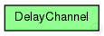

This documentation is released under the Creative Commons license
This documentation is released under the Creative Commons license(no description)
The following diagram shows usage relationships between types. Unresolved types are missing from the diagram. Click here to see the full picture.
The following diagram shows inheritance relationships for this type. Unresolved types are missing from the diagram. Click here to see the full picture.
| Name | Type | Default value | Description |
|---|---|---|---|
| disabled | bool | false | |
| delay | double | 0s |
propagation delay |
| Name | Value | Description |
|---|---|---|
| class | cDelayChannel |
| Name | Type | Unit |
|---|---|---|
| messageDiscarded | cMessage | |
| messageSent | cMessage |
| Name | Title | Source | Record | Unit | Interpolation Mode |
|---|---|---|---|---|---|
| messagesDiscarded | constant1(messageDiscarded) | count? | none | ||
| messages | constant1(messageSent) | count? | none |
channel DelayChannel { @class(cDelayChannel); @signal[messageSent](type=cMessage); @signal[messageDiscarded](type=cMessage); @statistic[messages](source="constant1(messageSent)"; record=count?; interpolationmode=none); @statistic[messagesDiscarded](source="constant1(messageDiscarded)"; record=count?; interpolationmode=none); bool disabled = default(false); double delay @unit(s) = default(0s); // propagation delay }
This documentation is released under the Creative Commons license